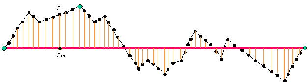
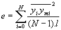

Le but de cette application est de permettre à l’opérateur de réduire le nombre de point d’un chemin de navigation pour pouvoir créer un fichier résumé de la base SISMER.
La réduction peut être très forte puisque les fichiers ne peuvent contenir que 999 points, alors que les fichiers de navigation en entrée peuvent contenir plusieurs centaines ne millier de points.
Les fichiers d’entrée sont les fichiers SMF de navigation, basé sur le format NetCDF. La documentation de ce format se trouve sur le site IFREMER (cf. référence W1).
Les fichiers d’entrée peuvent contenir jusqu’à 200 000 points de mesure.
Les fichiers de sortie sont au format des fichiers résumé de la base de données SISMER (cf. document DR1).
Ces fichiers contiennent au maximum 999 points par campagne, donc par fichier de navigation en entrée.
Les points retenus pour le fichier résumé doivent représenter au mieux le trajet du bâtiment. Pour atteindre ce but il est impératif que l’opérateur puisse ajuster les paramètres de la réduction.
Avec les moyens donnés par l’application, l’opérateur doit être en mesure de choisir le meilleur équilibre entre la précision et la limite de 999 points.
L’algorithme décrit plus bas calcule des distances, s’il fonctionnait directement à partir des coordonnées géographiques, il devrait calculer des distances sphériques. Afin d’éviter ces calculs, l’ensemble des points de navigation sont d’abord projetés.
Cependant les coordonnées originale en latitude, longitude, ne sont pas perdus et il n’y a jamais de conversion inverse. Les coordonnées projetées ne sont utilisées que pour calculer les distances, il n’y a donc aucune perte de précision sur les coordonnées écrites dans le fichier résultat.
Les fichiers SMF de navigation contiennent les données récoltées pendant une campagne entière. Or la mesure de la position du bâtiment est quelque fois interrompue, ce qui provoque des discontinuités dans le tracé de navigation
Dès la lecture du fichier les données de la campagne sont décomposées en segments. Chaque segment contient des mesures continues.
Le critère de séparation est double : sur le temps et sur la distance. Un écart de 10 minutes (et la distance correspondante à une vitesse de 300m par minute) est utilisé par défaut.
La seule projection codée dans l’application est la projection de Gauss-Krueger, utilisée dans le logiciel Ends&Bends en Basic.
Cette projection impose une limite au-delà de laquelle les distances sont substantiellement déformées. La limite est que les points projetés dans le même système de référence ne doivent pas être séparés de plus de 5° de latitude. Cette limite est indicative, l’application permet de la modifier.
Afin de pouvoir projeter les points sans inconvénient, l’application coupe les segments trop étendus. Cette coupure est effectuée juste après la détection des arrêts de mesure, lors du chargement des données.
L’algorithme a implémenté se résume en trois points :


Figure 1, principe de fonctionnement de l'algorithme.
Dans le programme original Ends&Bends en Basic, l’erreur globale entre le tracé réel et le tracé simplifié est estimée par la moyenne des carrés des distances entre les points réels et le tracé simplifié, divisé par la longueur totale du tracé réel :

où N est le nombre de points et l la longueur totale du tracé réel.A l’aide de cette erreur, le logiciel défini 5 modèles correspondant chacun à un niveau d’erreur particulier (10-1 pour le modèle 1, jusqu’à 10-5 pour le modèle 5).
Note :
L’algorithme est très sensible au calcul de l’erreur puisque c’est lui qui détermine quand il est arrêté. Par exemple le fait que N apparaisse en dénominateur implique que l’algorithme est plus clément pour segments longs. Pour s’en rendre compte il suffit de comparer les résultats obtenus avec les calculs optimisé sur la distance ou l’erreur.
L’algorithme de base décrit plus haut peut être adapté pour mieux prendre en compte la limite de 999 points.
En effet, l’inconvénient de la technique « des modèles », est ces modèles ne dépendent pas du tout du nombre de point obtenu : il arrive fréquemment qu’un modèle ait beaucoup moins de 999 points alors que le suivant en a beaucoup plus, l’opérateur doit alors sélectionner le modèle le moins précis pour respecter la limite.
Or l’algorithme fonctionne en ajoutant les points uns à uns, on peut donc décider de l’arrêter en utilisant n’importe quel critère.
L’algorithme implémente dans la nouvelle application Ends&Bends utilise cette particularité pour calculer des modèles intermédiaires ayant un multiple de 999 points. Le résultat n’est plus limité à 5 modèles, il peut en contenir jusqu’à 10.
Deux critères sont donc utilisés pour définir un modèle :
Pour régler plus finement la réduction des points sur un segment, un autre variante de l’algorithme a été implémentée : il s’agit de demander à l’opérateur le nombre de points qu’il désire obtenir.
Dans cette variante, l’algorithme reste inchangé, mais un seul modèle est calculé. Ce modèle contient exactement le nombre de points demandés.
Finalement une dernière méthode a été implémentée, toujours en exploitant le fait que l’algorithme ajoute les points uns à uns et en changeant le critère d’arrêt pour l’ajout des points.
Ce calcul est destiné à prendre en compte la limite des 999 points sur l’ensemble de la campagne et non plus sur un seul segment.
Pour ce faire l’algorithme traite tous les segments en même temps. A chaque itération il détermine quel segment il doit optimiser puis ajoute un point à ce segment. L’algorithme s’arrête quand la somme des points de chaque segment atteint 999.
Le choix du segment à optimisé peut se faire de deux façons :
Ces algorithmes reposent tous sur deux composantes primordiales :
L’application a été conçue pour que ces traitements puissent être paramétrés.
Seule la projection de Gauss-Krueger a été implémentée pour l’instant.
L’application propose également une projection « Tests » qui consiste à simplement multiplier les coordonnées géographiques par 100, il ne s’agit donc pas réellement d’une projection.
L’application implémente deux méthodes de calcul de la distance d’un point à une droite :